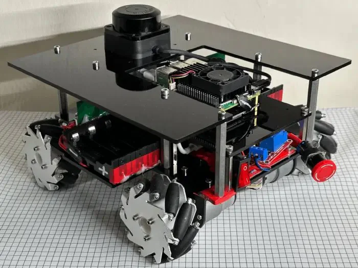

ROS2 AGV 多传感器融合导航
在 STM32 移动底盘上接入环境观测与运动反馈，让小车能够定位、规划路径并执行运输任务。
- 个人职责
- 独立接入 STM32 底盘与传感器，联调 ROS2 定位和导航
- 实车验证
- 完成 200 米连续运输

项目整体架构图
环境感知与执行
激光雷达采集周围环境的距离观测
环境观测
ROS2 Humble 上位控制联调建图、定位与路径规划
运动指令
STM32 移动底盘执行运输任务中的运动指令
运动反馈与定位
IMU / 光电编码器采集惯性及底盘运动信息
传感器观测
运动反馈接入为上层定位提供运动观测
运动反馈
ROS2 融合定位联调 EKF 与导航中的定位环节
ROS2 节点通信关系图
图中以功能标记传感器接入、建图和底盘桥接，连线表示导航各层交换的数据。
环境观测
激光雷达接入提供周围环境的扫描数据
激光扫描
建图模块利用环境观测构建地图
环境地图
导航模块使用环境信息规划行驶路径
融合定位
运动观测接入汇集上层可用的运动反馈
运动观测
robot_localization EKF生成融合运动估计
融合估计
定位与导航利用估计结果衔接定位和规划
底盘执行
导航控制根据运输任务和定位结果组织运动
运动指令
底盘通信将运动指令传到底盘
底盘控制
STM32驱动移动底盘执行
软件模块设计
- 环境感知
- 接入激光雷达，将周围环境观测交给建图和导航。
- 运动观测
- 接入 IMU 和光电编码器，为上层提供惯性与底盘运动反馈。
- 融合定位
- 使用 robot_localization 的 EKF 处理运动观测并输出融合估计。
- 路径规划
- 把环境地图、融合定位与运输目标衔接到导航流程中。
- 底盘控制
- 以 STM32 为底盘控制核心，执行上层运动指令。
硬件通信接口设计
| 设备或端点 | 通信接口 | 信号或数据 |
|---|---|---|
| 激光雷达 → 上位控制 | 扫描数据接入 | 周边环境距离观测 |
| IMU → 运动反馈接入 | 惯性测量接入 | 惯性或姿态观测 |
| 光电编码器 → 底盘反馈 | 运动测量输入 | 编码器读数与底盘运动信息 |
| ROS2 上位控制 ↔ STM32 | 底盘指令与反馈接口 | 运动指令与底盘反馈 |
关键功能与技术说明
- EKF 融合定位
- EKF 先按运动模型预测状态，再用可用观测修正估计，将不同来源的运动观测衔接到同一个状态估计中。定位与导航联调时使用融合后的运动估计。
- 建图与运动观测分工
- 激光扫描用于观察环境并支持建图，IMU 和编码器用于提供运动侧信息。导航将地图、位置估计与运输目标关联后，再将运动指令交给 STM32 底盘。